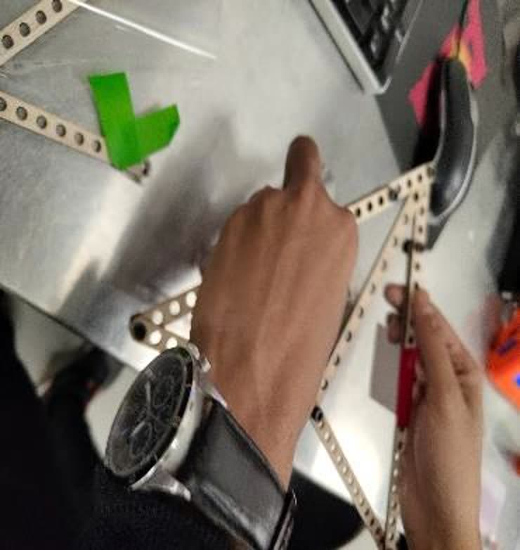
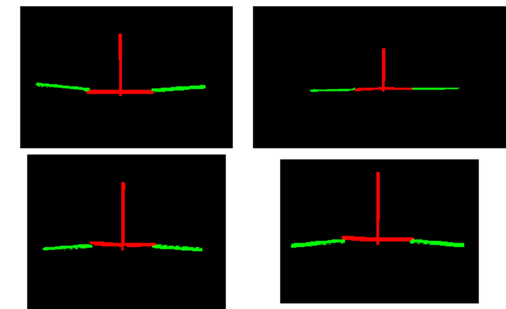

A Robot That Learned to Fly by Copying a Bat, One Fold at a Time
A foldable flapping-wing robot modeled on Glossophaga soricina, Pallas's long-tongued bat. The wings are a two-layer lamination — vinyl film bonded to a flexure layer — with vein-like creases that act as living hinges, so the wingspan folds and changes in flight. A single servo, centrally mounted between both wings, drives a gear train and a four-bar linkage that flaps them together. The project ran the full loop: parameter identification on the physical parts, symbolic four-bar kinematics, MuJoCo simulation, and a working prototype that flaps.
Bats don't have wings. They have hands.
A bat's flight surface is a membrane stretched over jointed fingers, which is why it can change shape mid-stroke — folding, cambering, and adjusting span in ways a rigid airfoil can't. That adaptive morphology is the whole reason bats out-maneuver comparable fliers in cluttered space, and it's what makes them worth copying for search-and-rescue and survey drones that have to work indoors and between obstacles.
The project started as a study of gliding and landing mechanics — model the wing, predict trajectories and aerodynamic forces, evaluate configurations. After a review, the professor pushed for something harder: add a flapping mechanism and use the force the four-bar linkage was already producing. That redirect is what turned a glider into a robot, and it forced two other changes downstream — a stronger frame and a properly laminated wing.
Laminate two layers, crease them, and the hinges come free.
The final wing is the course's lamination technique applied literally: a vinyl film with an adhesive backing cut to the wing profile, with a flexure material bonded straight onto the adhesive side and the excess trimmed. The pattern of that flexure layer forms vein-like structures copied from bat wing anatomy — and those veins double as the hinges. No pin joints, no bearings: the wing folds where the laminate is compliant and stays rigid where it isn't, which is what lets the wingspan change dynamically during a stroke.
That was the endpoint, not the start. Early prototypes used whatever was to hand — wax paper, then a kitchen paper sheet versus a clear mylar sheet. The mylar won, and it won on data: the gliding experiment from parameter identification is what chose it.


One motor, two wings, and a gear mesh that broke the first frame.
The drivetrain converts rotation into stroke through a gear-driven four-bar linkage. One servo sits on the body structure between the two wings and flaps both — a deliberate choice twice over: it halves the actuator count, and its central placement keeps the center of gravity on the body frame rather than skewed to one side, which matters more on something that has to glide than on something that just has to move.
The frame material was the hard lesson. The initial build used balsa board, and it simply couldn't hold a gear mesh — it broke under minimal actuation and had none of the strength the flapping stroke demanded. The final frame moved to 3D-printed PLA, which was stiff enough to both survive the stroke and carry a printed gear mesh that the balsa version could never support. Control is an ESP32, powered directly for the prototype; onboard batteries were left as future work.



Measure the parts before you trust the model.
Each team member owned one physical parameter, measured on the real hardware and fitted in Python — the numbers that make a simulation mean something. Stiffness (my piece): six tests starting from the empty chassis and adding components one at a time up to the fully assembled system, with a power-law model fitted to the force–displacement data so each component's contribution to overall structural integrity could be separated out. Compliance: loaded deflection tests across the cylinder, servo, batteries, and ESP32 breadboard, fitted linearly — the foam board came out at 0.1578 m/N, bending measurably more than balsa under identical load.
Mass and inertia: a torsional pendulum on the balsa chassis, timing oscillation periods at several pivot distances, polynomial-fitted in Python and cross-checked against SolidWorks. Gliding: three membrane configurations — plastic parchment, wax paper, and a bare unmembraned frame — through free-fall and assisted drop tests, with a 4th-degree polynomial fitted to the motion to recover acceleration and velocity profiles and back out a coefficient of gliding friction.
| Parameter | Method | Fit |
|---|---|---|
| Stiffness | 6 incremental load tests, empty chassis → full system | power law |
| Compliance | digital scale + loaded deflection | linear · foam 0.1578 m/N |
| Mass & inertia | torsional pendulum, varied pivot distance | polynomial vs. SolidWorks |
| Gliding | free-fall + assisted drops, 3 membranes | 4th-degree polynomial |
Close the loop symbolically, then check the Jacobian.
The four-bar was solved rather than sketched. The linkage's geometric closure constraints were written symbolically and the valid angular configurations found by posing it as an optimization that minimizes constraint violation — which is what lets different link-length designs be evaluated without hand-deriving each one. Jacobian matrices then relate the independent joint velocity to the dependent ones, exposing how motion propagates through the mechanism, and the result is plotted as linkage configurations with velocity vectors at the key points.
velocity: J q̇ = 0 → dependent q̇ from the independent input, at every configuration

Sine waves in, flapping out.
The mechanism was rebuilt in MuJoCo as a hierarchical rigid-body model — an XML tree of bodies joined by hinge joints, with actuators driving them. A custom controller commands joint positions from time-dependent sine functions parameterized by amplitude and frequency, which is the simplest honest model of a flapping gait: one periodic input, coordinated output across the linkage. The simulation steps forward and renders at 800×600, and the frames are compiled into an animated GIF for inspecting kinematics and actuator behavior.

It flaps, consistently, and the model saw it coming.
The finished prototype delivered consistent wing motion with minimal deviation from the modeled kinematics, and the gliding and flapping tests showed stable, controlled motion supported by the measured stiffness and the weight distribution that came out of the CG work. Sim-to-real agreement was close, which the report credits to feeding real measured values — compliance, mass distribution, joint friction — back into MuJoCo and SolidWorks rather than trusting nominal ones. The residual gap is attributed to what wasn't modeled: air currents during testing and small imperfections in the printed parts.

The full project video.
The team's final presentation — bio-inspiration and scope, the prototyping plan across three builds, the circuit and actuation choices, and the finished mechanism flapping at the end.
What this project proves.
Compliance is a design material, not a defect. The wing has no hinges because the laminate is the hinge — pick where the structure is allowed to bend and you've designed the joint. Material choice is a load-path decision. Balsa didn't fail because it was weak in the abstract; it failed because a gear mesh concentrates force exactly where a brittle sheet has nothing to give, and the fix wasn't more balsa but a different process. And a model is only as good as the parts you measured. Sim and hardware agreed here because compliance, inertia, and friction went into the simulation as measured numbers — the parameter-identification work is invisible in the final video and is the reason the final video works.
The team's own honest caveat: this isn't a true digital twin yet. MuJoCo runs box approximations rather than the real CAD geometry, so the next step is importing the actual model. Beyond that — more power at the wings so flapping generates forward thrust rather than just stroke, and better fitting algorithms in parameter identification.
Team project — Niyati Abhijeet Vaidya, Vivek Sunil Kulkarni, Prajjwal Dutta, Yogesh Pradeep Salvi (Arizona State University). Stiffness parameter identification was my contribution; figures from the team's final project report.